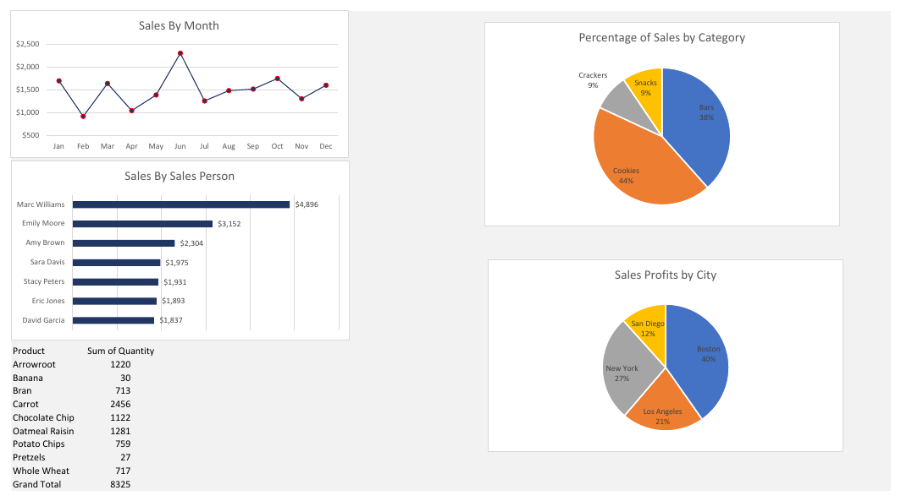

Excel Charts & Dashboards
Coursera Guided Project · Completed October 2026.
Cleaned and analyzed a sample company sales dataset in Microsoft Excel, creating views with data subsets to analyze profits by month, salesperson, product category, and city.
Created line graphs to track the company's profit trends, identify the most profitable salespeople and products, and compare cities.
What I did: I cleaned and formatted the data in Microsoft Excel, including removing duplicates, correcting values, and standardizing naming. I used PivotTables to summarize the data, and conditional formatting, charts, and slicers to create a dashboard that helped me present and analyze insights.
Tools / Data / Steps: I used Microsoft Excel with a sample sales dataset from the Coursera guided project, analysing a full year of sales from January to December. I cleaned the data, used PivotTables to summarize the total profit by month, salesperson, product category, and city, and built a dashboard with charts and slicers to filter and compare the data.
Key findings:
I analyzed a full year of sales totaling $17,988.66 in profit and 8,325 units sold. The highest monthly profit was $2,308.75 in June, and the lowest was $926.05 in February. Marc Williams was the highest-earning salesperson with $4,896.13 in profit. Cookies was the most profitable product category, at 43.5% of total profit, and Boston was the most profitable city, at 40.3% of total profit.
Skills used: Excel, PivotTables, conditional formatting, charts, data cleaning, data presentation, and data analysis.
